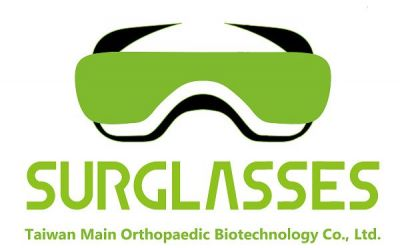

FOXCONN‑MobileDrive Intern For Automotive AI/SW 
FOXCONN‑MobileDrive technology: A new 50/50 joint venture announced by Stellantis and Foxconn.
• Learned existing neural network optimization methods (Pruning, Quantization, KD, NAS, etc.)
• Utilized open sources to implement model optimization methods and constructed a general optimization pipeline for CNN‑based networks.
• The pipeline is proved that it can increase efficiency and accuracy significantly on YOLOv5.
• Experienced conversion between DL frameworks and deployed neural networks on edge devices(Android).
• For more information, please refer to the documentation.
July 2022 - Jan 2023
Undergraduate Research Assistant 
National Yang Ming Chiao Tung University ‑ AIMMLab
• Survey academic papers related to AI and CV and built a comprehensive knowledge base on deep neural networks.
• Support paper publications, for instance, by conducting related experiments and composing supplementary documentations.
• Participate in weekly workshops and share research achievements (paper presentations) with colleagues.
July 2021 - Nov 2022
Unreal Engine Software Intern 
Taiwan Main Orthopaedic Biotechnology
• Developed a virtual anatomical dissection table in Unreal engine and C++.
• Handled bugs and improved the program to address customer inquiries and concerns.
• Proved ability to work within tight deadlines and a fast‑paced atmosphere.
• Constructed and modified functions such as touch controls, note‑taking, dissection, and converting CT/MRI data to 3D formats via shaders.
• Participated in continuous improvements by generating suggestions, engaging in problem‑solving activities to support teamwork.
July 2020 - September 2020